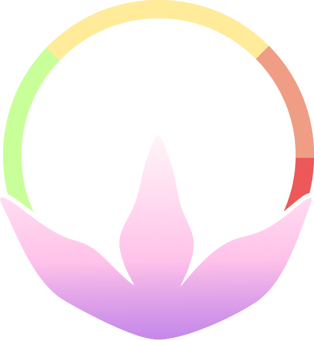

Een overzicht van de mechanics die ik heb ontwikkeld voor The Way to Nirvana

Voor The Way to Nirvana heb ik een cirkelvormige timer gemaakt met Unity UI. Met een Raycast controleer ik of de speler naar een Thought kijkt. Zolang de speler kijkt, wordt de resterende tijd afgeteld met Time.deltaTime. Met fillAmount laat ik zien hoeveel tijd er over is. Daarnaast heb ik een Gradient toegevoegd, waardoor de timer tijdens het aftellen van kleur verandert. Wanneer de speler wegkijkt, wordt de timer verborgen en visueel gereset. Ondertussen herstelt de resterende tijd geleidelijk naar de beginwaarde.
void Update()
{
Ray ray = cam.ViewportPointToRay(
new Vector3(0.5f, 0.5f, 0f)
);
Thought thought = null;
RaycastHit hit;
if (Physics.Raycast(ray, out hit, maxDistance, interactableMask))
{
thought = hit.transform.parent.GetComponent<Thought>();
}
if (thought != currentThought)
{
if (currentThought != null)
{
currentThought.StopLooking();
}
if (thought != null)
{
thought.StartLooking();
}
currentThought = thought;
}
}void Update()
{
if (isLookedAt)
{
currentThoughtTime -= Time.deltaTime;
circleTimer.timeLeft = currentThoughtTime;
if (currentThoughtTime <= 0)
{
CompleteLooking();
}
}
else if (currentThoughtTime < thoughtTimer)
{
currentThoughtTime += Time.deltaTime;
if (currentThoughtTime > thoughtTimer)
{
currentThoughtTime = thoughtTimer;
}
}
}
public void StartLooking()
{
isLookedAt = true;
circleTimer.StartTimer(
thoughtTimer,
currentThoughtTime
);
}
public void StopLooking()
{
isLookedAt = false;
circleTimer.ResetTimer();
}void Update()
{
if (timeLeft > 0)
{
float progress = timeLeft / duration;
timerImage.fillAmount = progress;
timerImage.color = gradient.Evaluate(progress);
}
}
public void StartTimer(float duration, float timeLeft)
{
this.duration = duration;
this.timeLeft = timeLeft;
timerImage.enabled = true;
lotusImage.enabled = true;
}
public void ResetTimer()
{
timeLeft = duration;
timerImage.enabled = false;
lotusImage.enabled = false;
}Ambience sound
Voice sound
Ik heb voor de audio meerdere AudioSources in Unity gebruikt, zoals ambience, voices en drone sounds. Deze geluiden spelen tegelijk af en veranderen automatisch van volume tijdens het spelen. Met behulp van Mathf.Lerp lopen de overgangen vloeiend in elkaar over. De audio reageert op hoeveel thoughts er nog over zijn in het spel. Als er veel thoughts over zijn hoor je vooral rustige ambience, en wanneer het minder wordt komen de voices en drone sounds sterker naar voren om meer spanning te creëren.
void Start()
{
ambience.loop = true;
voices.loop = true;
drone.loop = true;
ambience.Play();
voices.Play();
drone.Play();
Spawner.Instance.remainingThoughtsPercentageChanged
.AddListener(UpdateVolumes);
UpdateVolumes();
}public void UpdateVolumes()
{
float percentage =
Spawner.Instance.remainingThoughtsPercentage;
targetAmbience = percentage;
targetVoices = 1f - percentage;
targetDrone = 1f - percentage;
}
void Update()
{
ambience.volume = Mathf.Lerp(
ambience.volume,
targetAmbience,
fadeSpeed * Time.deltaTime
);
voices.volume = Mathf.Lerp(
voices.volume,
targetVoices,
fadeSpeed * Time.deltaTime
);
drone.volume = Mathf.Lerp(
drone.volume,
targetDrone,
fadeSpeed * Time.deltaTime
);
}// Fragment uit CompleteThought()
thoughtCompleted.Invoke();
remainingThoughtsPercentage =
1f - (float)thoughtsCompleted /
((float)initialThoughtsCount + 60);
remainingThoughtsPercentageChanged.Invoke();